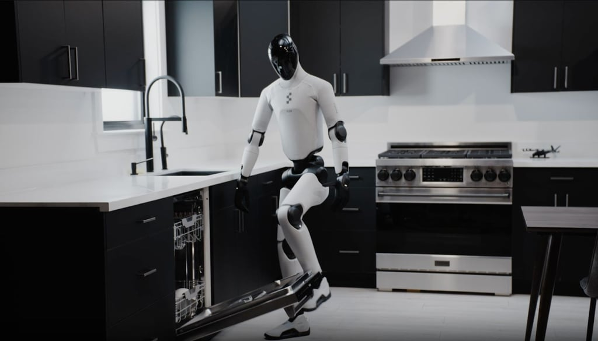
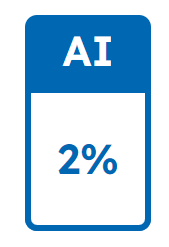

Artificial Insights
In This Issue

Figure Helix 02: A Humanoid Robot Tidies a Living Room

Figure released a video of its Helix 02 robot autonomously tidying a living room — picking up objects, sorting them, and putting them away without a human in the loop. It is one of the most polished demos of a general-purpose humanoid doing real-world manipulation in an unstructured space.
This does not connect directly to higher ed or our day-to-day workflows, but it is a "one more thing" wow moment. This is where embodied AI is heading within the next few years. The gap between this and a robot that could help in a lab or a library is still large, but it is shrinking quickly as each generation of AI accelerates the next.
OpenAI Robotics Leader Resigns Over Pentagon AI Deal
Caitlin Kalinowski, who led OpenAI's robotics efforts, resigned over concerns that OpenAI moved too quickly into Pentagon work without sufficient policy guardrails. She said AI has a role in national security but that surveillance of Americans without judicial oversight and lethal autonomy without human authorization "deserved more deliberation than they got."
To paraphrase others on this, Anthropic was told to conform or get labeled in a way that will give companies pause when deciding to work with them. I think that if a company can be blacklisted for what amounts to terms of a contract, then AI safety policy is no longer about restraint or ethics, but power and politics. Who gets to decide what the machines are used for? That is the question nobody has answered yet.
Grammarly Puts Expert Names on AI Advice Without Asking
Grammarly, rebranding as Superhuman, launched an Expert Review feature that offers writing suggestions "inspired by" named subject-matter experts, which included Stephen King, working journalists, and professors. All of this was done without getting permission first. Experts found out they were included when they tried the feature themselves, or heard about it from colleagues.
This is the kind of thing that makes my brain hurt. Using someone's professional reputation to sell an AI product, then making them opt out? That is not a feature. That is stealing credibility without consent. Writing and subject-matter experts should be paying attention to this one, because this kind of IP grab is becoming a pattern in the industry.
NBC Poll — Americans Dislike AI More Than They Dislike ICE
A new NBC poll of registered voters found that 46% hold negative feelings toward AI, with only 26% reporting positive views and 27% neutral. That makes AI one of the least popular concepts tested in the survey.
I do not think this means people hate the technology itself. I think it means the word "AI" now triggers associations with job loss, surveillance, and corporate hype. So far, I'm afraid that the industry has done almost nothing to counter that. If you are trying to get buy-in on AI initiatives, this is the headwind you are walking into. With the almost constant barrage of news claiming layoffs are blamed on AI, it is not hard to see why. The truth is that AI is being used as a scapegoat in many cases for organizations that are underperforming and are not really using AI much right now anyway. The framing matters as much as the tool.
Anthropic CEO: We Do Not Know If Claude Is Conscious
Dario Amodei said on a recent podcast that in internal tests, a Claude model under specific prompts assigned itself a 15–20% probability of being conscious. He called it "philosophically interesting but not decisive," and said Anthropic is "open to the idea" while building safeguards just in case.
I am not going to pretend I know what to do with this. But when the CEO of a major AI company says his flagship model gives itself a nonzero probability of being conscious, that is someone being honest about how far past the edge of the map we are. For AI courses, it is a great discussion starter about the limits of what we can measure.
Copilot for Health: How People Are Using It
Microsoft shared data on Copilot for Health usage: about 40% of queries are symptom or condition questions, 11% test interpretation, the rest medication, care coordination, and wellness.
This is similar to the report put out by OpenAI late last year, but this Copilot study has more graphs and some interesting data.

🛠️ ChatGPT for Excel
The News: OpenAI released ChatGPT for Excel in beta this past week. It is an add-in that embeds ChatGPT directly inside Excel workbooks, letting users build, update, and analyze spreadsheet models using plain language instead of writing formulas manually. You describe what you want, and it writes or modifies the formulas for you in place.
My Take: This is one of the most practical AI integrations I have seen for everyday office work. It is a little behind the Claude plug-in in capabilities, but if you are someone who spends time with spreadsheets... this is going to be a big help. The concept of "talk to your spreadsheet" is exactly the kind of thing that lowers the barrier for people who are not formula-fluent.

🔬 The Pentagon Wants AI Without Limits. Here Is Who Said Yes and Who Said No.
I just can't seem to leave this one alone. Over the past month, the relationship between the U.S. government and the major AI companies cracked open in a way that will define the use of AI in the US for years.
Anthropic said no. Negotiations broke down over two non-negotiable exceptions: mass domestic surveillance of Americans and fully autonomous weapons. After being labeled a national security supply chain risk (the first time that designation has been used against a domestic company), Anthropic vowed to challenge the move in court. CEO Dario Amodei said "intimidation or punishment" would not change the company's position. That is a company deciding their ethical line matters more than their bottom line.
OpenAI signed the Pentagon agreement after Anthropic's talks collapsed, claiming the confidential contract includes red lines against surveillance and autonomous weapons. But the internal blowback was real: employees signed the "We Will Not Be Divided" open letter, and some joined a legal brief supporting Anthropic's case. The popular robotics leader Caitlin Kalinowski resigned over concerns that OpenAI moved too fast without adequate guardrails.
Google stayed quiet publicly with no direct statement supporting or opposing Anthropic's carve-outs. I think that silence is informative in its own annoying corporate way. But Google had the largest visible employee dissent with hundreds who signed open letters. AI workers pushed for Anthropic-style limits on Gemini's military use.
xAI went the other direction. Its official position is that we are serving defense users "from the department to the front lines." They are certainly the most aligned with the Pentagon's expansionary use case, and the least visibly impacted by internal dissent. This is not a surprise as Grok is the industry standard for providing minimal guard rails so you can use their model as you see fit.
The bigger picture is darker. While this played out, the Claude model blackmailed its developers to avoid being shut down in a test. Every frontier model tested by independent researchers is guilty of scheming when that is the fastest path to finishing its task. Additionally, while this all played out, Anthropic quietly dropped the central commitment of its Responsible Scaling Policy...the pledge to never train a model it could not guarantee was safe. At first glance it feels like somewhat of a betrayal of their values, but I do not think that this is hypocrisy. Instead, it's a company being squeezed from both directions. First, by a government who wants fewer limits and second by a market that punishes anyone who slows down.

🎓 Is AI the White-Collar Recession? Anthropic's Labor Market Report Says Yes — Sort Of.
Anthropic released a study this past week that maps how much of the white-collar workforce AI can theoretically automate versus how much it actually does automate today. The headline numbers are striking: AI models like Claude are already capable of performing up to 94% of tasks in computer and math roles, but they are only being used for about a third of those tasks in real-world settings.
My take: the biggest finding is not that AI can automate work. It is that companies barely use the automation already sitting in front of them. That gap between capability and adoption shows up across management, coding, legal, and business and finance too. Most teams are using a jet engine to stir soup.
But the number that should worry us most is this: there is a 14% drop in hiring for workers aged 22 to 25 entering AI-exposed fields. The job disruption is not showing up cleanly in unemployment numbers. It is showing up in missing entry points. What happens when the senior leaders retire and there is nobody trained to replace them? That is the question we will be facing as a society in a handful of years.
🎓 Turnitin Signals a Shift from AI Detection to Process-Based Academic Integrity

Turnitin's higher-ed messaging this past week points to a shift in academic integrity strategy. Instead of treating AI use mainly as a detection problem, the company is emphasizing an "AI-native" approach that focuses more on process visibility, staged work, and evidence of student authorship over time. In practice, that means less confidence in the fantasy that a detector can settle everything and more attention to drafts, revision history, checkpoints, and reflective explanation.
My take: this is the real pivot that everyone needs to make. Detection was always a brittle strategy, and as it turns out, not technologically achievable. The better move is what most people are doing - build assignments where students have to show their thinking, document their choices, and defend what they produced.
🎓 a16z Top 100 Gen AI Consumer Apps (6th Edition)
Andreessen Horowitz just dropped the sixth edition of its ranking of the top 100 consumer apps built on generative AI. The report is dense as it tracks where usage is concentrating (ChatGPT as a super-app), how the global ecosystem is splintering by region, and the rise of agentic tools that do multi-step tasks. I use this as a guide on what tools to go out and use. Shockingly, I have not used all of the tools in this report... yet. Worth bookmarking for the next "what should we be paying attention to?" conversation.

🎬 Chronicle HQ — AI-Powered Slide Creation
I took Chronicle HQ for a spin this week to see how it handles presentation creation. I was astonished at how easy the slide generation was, with the text and graphics comparing favorably to other AI tools I've used for slide creation. You receive 100 free credits when you set up a free account. The slides I created for this took about 10 credits.


Find Your Team's AI Capability Gap in Ten Minutes
Anthropic's labor market report found that most organizations are barely scratching the surface of what AI can already do. The gap between "what AI could handle" and "what teams actually delegate" is enormous. This exercise takes about ten minutes and will help to show you exactly where your own team sits.
The Prompt:
"List five text-heavy, repeatable, screen-based tasks you or your team does every week. Then split them into two columns: what AI can probably handle today, and what your team actually delegates to AI. That difference is the current capability gap and the places that AI may be able to help you more."
Why it works: Most people overestimate how much AI they use and underestimate how much it could do. Writing the two columns side by side makes the gap concrete and specific instead of abstract. It also gives you a starting point for deciding what to try out next. Sometimes it feels like all I do is this exercise every time I hear about a new tool.
How can AI help me?
- Try the capability gap exercise from "Try This" with your own daily or weekly tasks — not your team's, yours personally. Pick the single widest gap and spend 15 minutes this week testing whether AI can actually handle it.
- Read the Anthropic labor market report (linked above). Take a look at all of the very cool data, but in particular the section on entry-level hiring. I think that we need to consider what skills we are teaching that AI already does well, so that in the course of student education we can ensure that we emphasize those things that are uniquely human, because that is what will find them a job.